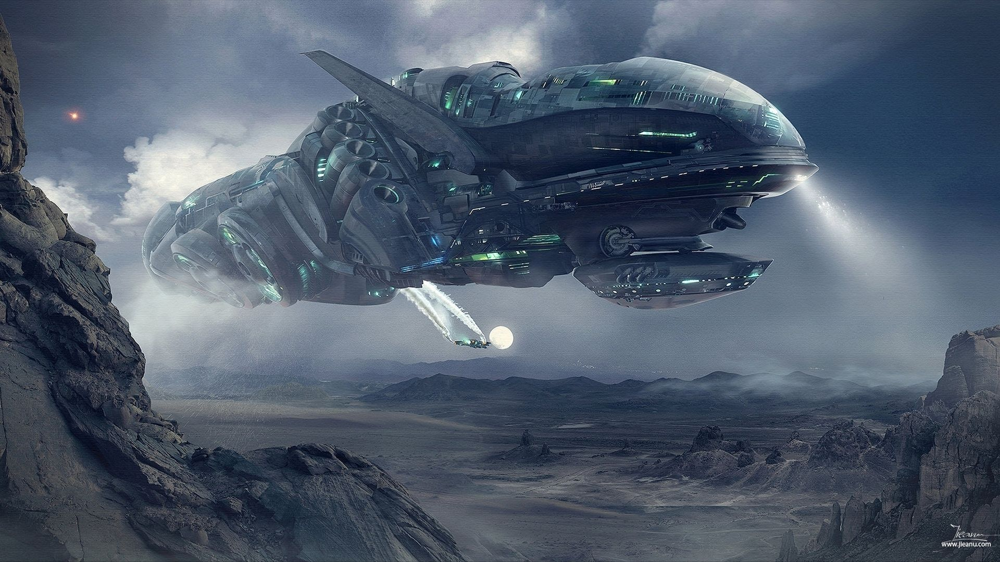
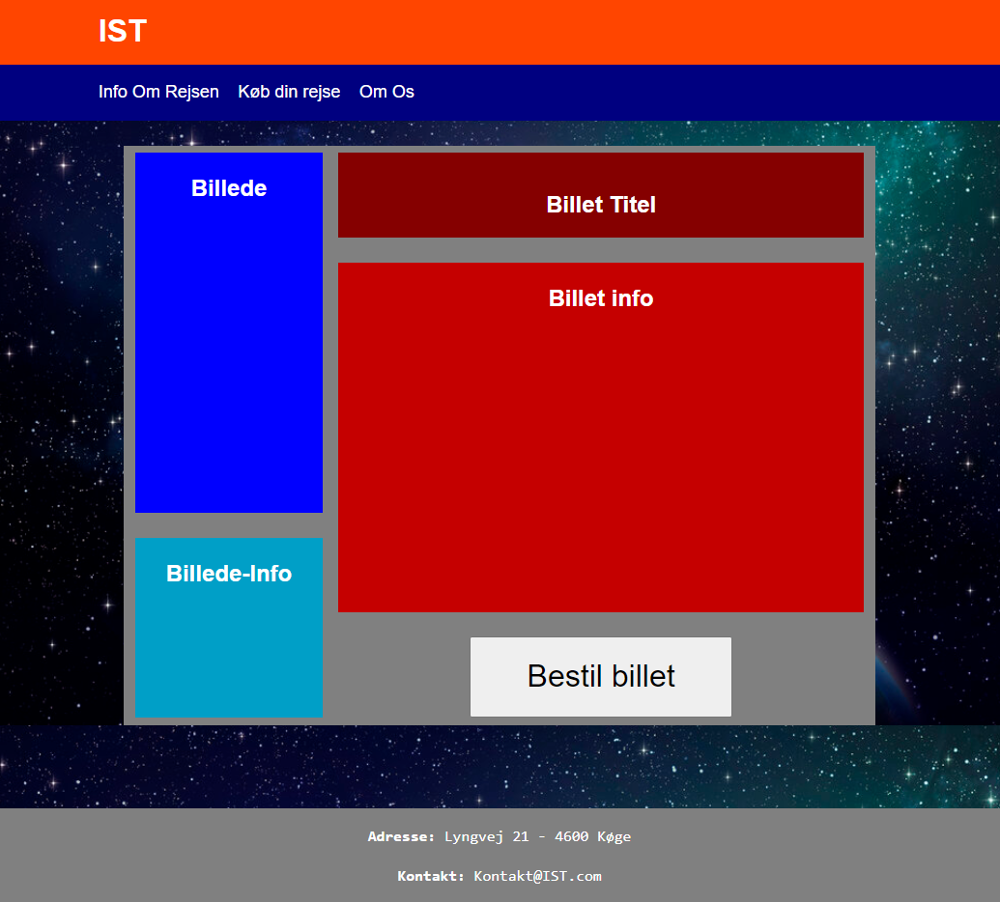
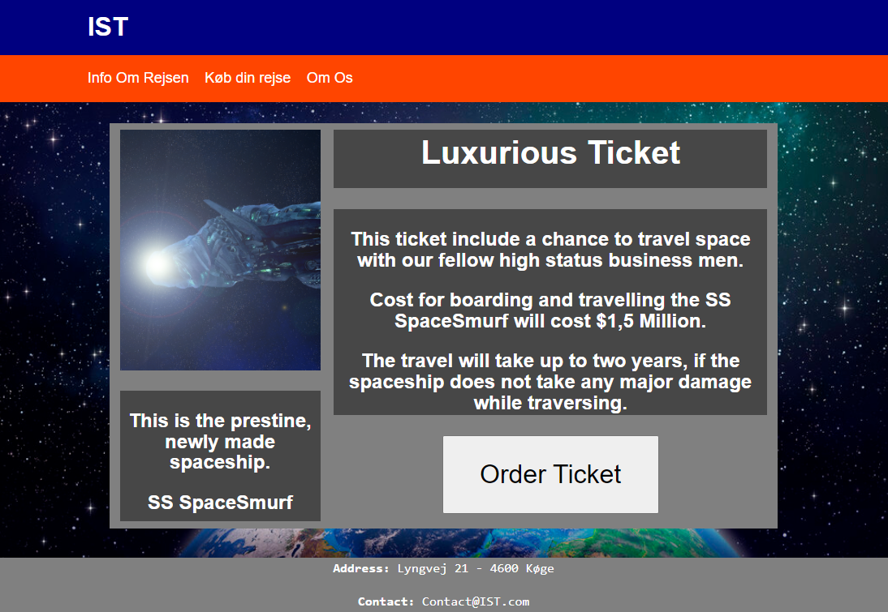
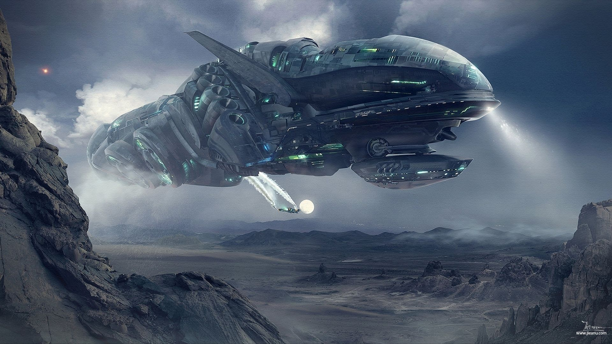
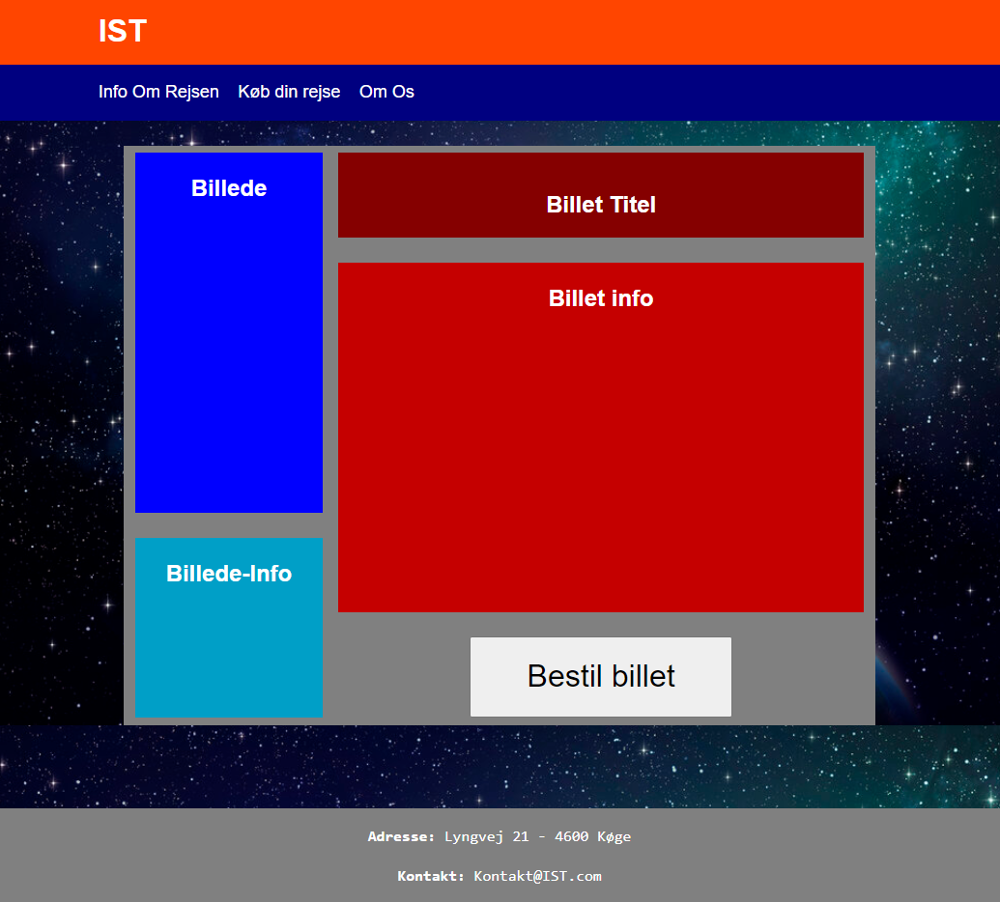
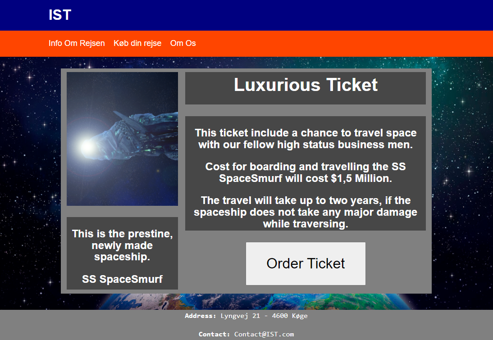

Rasmus Pedersen

IST
One of the projects that my group and I, worked on in the first term of the MultiMedia Designer course, was called Space Travel.
We decided to call our project IST (International Space Travel), where we split us into different parts, so we could code a site each.
Emil Huneck and I also decided to do a little extra, so we ended up making our poster in photoshop. Here we used all kinds of tricks with shadows, masks, and lighting.
The site that I decided to make, was the “but ticket” page. Here it was designed to give some general information about the trip and give you the option of buying the ticket directly from the site.
The way I controlled how to move and size elements on the site, was through flex-boxes. This made it so that I could scale from a small amount of code, so that it could be a bit responsive when sizing the page window.
 




